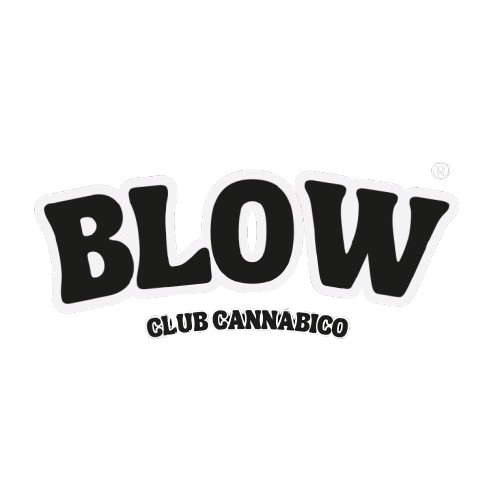

En Blow, promovemos un enfoque seguro y responsable hacia el consumo de cannabis, con énfasis en el conocimiento y la inclusión. Nos dedicamos a crear un espacio donde se puedan compartir experiencias y explorar la planta con fines medicinales. Nuestro objetivo es desmitificar el cannabis y eliminar estigmas, proporcionando información científica y basada en experiencias. Buscamos construir una comunidad educada que valore los beneficios del cannabis y lo utilice de manera consciente y segura.
Quienes somos?
Blow está compuesto por un grupo diverso con interés en el cannabis, comprometido con su usos responsable y consciente. Valoramos la inclusión, el respeto y la diversidad, creando un entorno en el que todas las voces son escuchadas.La diversidad de nuestro equipo nos permite abordar el consumo desde múltiples perspectivas y ofrecer recursos adaptados a las necesidades de nuestros miembros.
Educación y acceso responsable:
Ofrecemos talleres y capacitaciones sobre los beneficios, riesgos y uso responsable del cannabis. Nuestro objetivo es brindar información confiable sobre sus propiedades medicinales, métodos de consumo y aspectos legales. Contamos con expertos que brindan orientación personalizada y organizamos seminarios con profesionales de la salud. Además, ofrecemos un ambiente seguro y regulado para el consumo, asegurándonos de que todos los productos cumplan con estrictos estándares de calidad y seguridad.
Requisitos para ser miembro
En primer lugar, los aspirantes deben ser mayores de 18 años, asegurando que todos los miembros sean adultos responsables. Además, es obligatorio estar registrado en el Registro Nacional de Usuarios de Cannabis Medicinal (Reprocann), lo que garantiza que todos los socios estén formalmente reconocidos y autorizados para utilizar cannabis medicinal.
Es importante que los socios no desarrollen el autocultivo, ya que la ONG se encarga de todo el proceso de cultivo. Esto implica delegar a la organización la facultad de cultivar cannabis en nombre del socio, asegurando así que el cultivo se realice de manera profesional y conforme a todas las normativas legales y de seguridad. Por último, para formalizar la membresía, los interesados deben abonar una cuota inicial, que permite acceder a todos los beneficios y servicios ofrecidos por el club.
Reprocann
Es el “registro del programa de cannabis" creado para registrar y autorizar a las personas que cumplan con los requisitos para acceder a todos los derivados de la planta de cannabis, con fines medicinales, terapeuticos y/o paliativos del dolor
Quienes pueden registrar un cultivo?
Cualquier persona puede inscribirse en el REPROCANN si cumple con los siguientes requisitos:
- Cuenta con una indicación médica que justifique el uso de cannabis.
- Ha firmado el consentimiento informado correspondiente, cumpliendo con las condiciones establecidas por el Programa.
- Ha completado los requisitos y trámites solicitados por el Programa en tiempo y forma.
- El sistema validará los datos a través del portal Mi Argentina (https://www.argentina.gob.ar/miargentina), por lo que es necesario tener una cuenta en este sitio o en la app Mi Argentina.
- El registro puede ser realizado personalmente, a través de un familiar, o por una tercera persona u organización civil autorizada por la Autoridad de Aplicación.
¿Cómo puedo registrarme?
Para inscribirse en el REPROCANN, el paciente debe:
- Contar con una indicación médica.
- Haber firmado el consentimiento informado y la declaración jurada correspondiente, cumpliendo con las condiciones establecidas por el Programa.
- El sistema validará los datos a través del portal Mi Argentina. El paciente inicia el trámite en el aplicativo web, y el profesional de salud prescriptor debe adjuntar la Declaración Jurada y el Consentimiento Informado en formato PDF, vinculando al paciente, tercero u ONG con el cultivo.
- El profesional de salud prescriptor debe tener matrícula vigente. Las organizaciones no gubernamentales deben estar inscritas en el Registro Nacional de Organizaciones de la Sociedad Civil vinculadas con la Salud, dependiente de la Dirección Nacional de Relaciones Institucionales del Ministerio de Salud de la Nación.